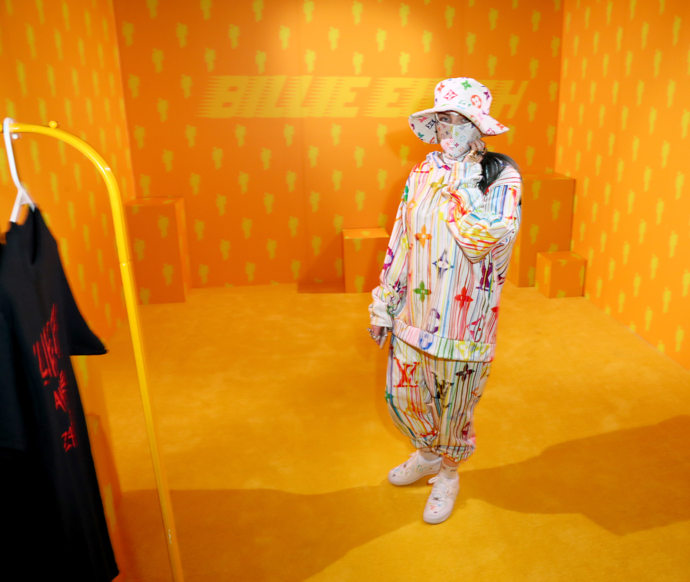
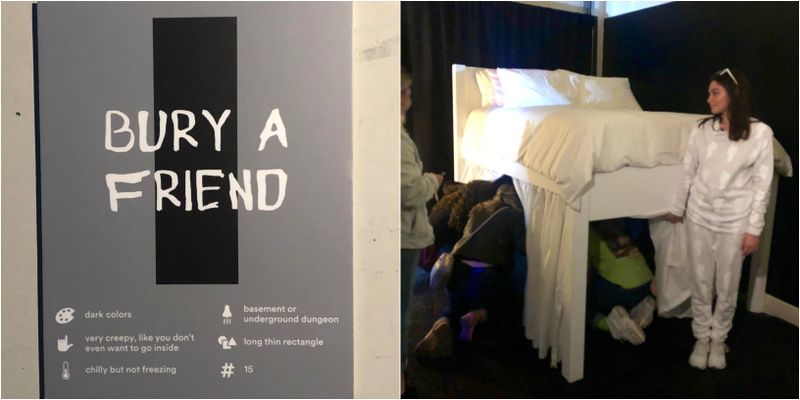
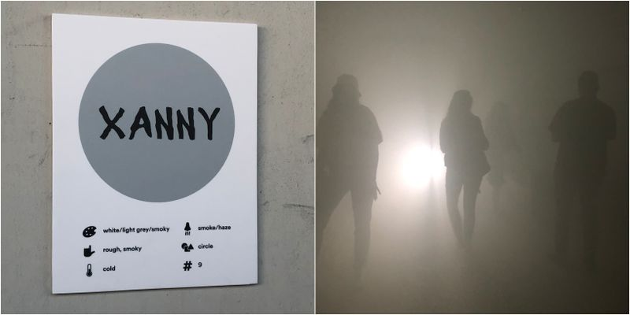
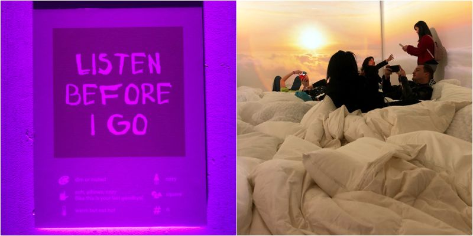

Billie Eilish is an 18 year-old singer-songwriter from Los Angeles, California. Who quickly rose to fame after releasing her hit song ‘Ocean eyes’ when she was 14 years old. The impressive thing about her is that her and her brother write most of there songs from there bedroom. None the less at the age of eighteen she won 5 Grammys.
The main thing that drew me into Billie Eilishes music in the first place was the unique way in which she takes her thoughts and transforms them visually whether its through her music, graphic or videos to create this new world. Another thing is the diversity in her music and visuals. I watched an interview when she once said “Genres are out of date”
The Billie Eilish Experience
The Billie Eilish Experience is a museum that was opened for one weekend only, March 29-31, 2019 to celebrate the launch of Billie Eilish's debut album, WHEN WE ALL FALL ASLEEP, WHERE DO WE GO?. She turned her album into an immersive sensory experience. Across 14 unique rooms, your guided hrough the sights, smells, and sensations of the world of WHEN WE ALL FALL ASLEEP, WHERE DO WE GO?. The reason that she created this experience is because she has synesthesia. Synaesthesia is a perceptual phenomenon in which stimulation of one sensory or cognitive pathway leads to involuntary experiences in a second sensory or cognitive pathway. This basically means that she associates sounds with certain coulur, numbers, shapes and or temperatures. In this case she did it with each of her songs.
  